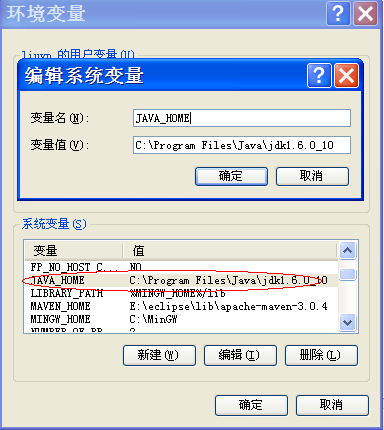

什么是Maven
Maven是apache出的项目构建工具，主要是来管理项目中的jar包及项目的集成。
Maven的安装
在官网下载Maven，然后解压。
设置Maven环境
Maven需要环境变量JAVA_HOME
如图所示：

设置Maven_HOME
变量名：M2_HOME 变量值：E:\eclipse\lib\apache-maven-3.0.4
设置path
-
在环境变量path的尾部加上：
;%M2_HOME%\bin;---------注意分号。
也可以直接在path后加入：E:\eclipse\lib\apache-maven-3.0.4\bin。
打开命令行，输入mvn -version检测Maven是否可用。
如果配置正确，显示结果如下：
设置Maven的仓库位置
仓库用于存放我们项目所依赖的所有jar包。
修改的文件为Maven根目录下的conf文件夹的setting.xml,我的位置为：E:\eclipse\lib\apache-maven-3.0.4\conf。
修改的位置如下图所示：
安装eclipse插件
安装插件
Maven的eclipse插件m2e安装地址为：http://m2eclipse.sonatype.org/sites/m2e
安装插件后，会提示重启eclipse，这是一般会出现Eclipse is running in a JRE, but a JDK is required....的提示，这是因为m2e插件需要jdk的支持，解决这个问题的办法是在eclipse的配置文件(eclipse.ini)中添加如下配置：
-vm
C:\Program Files\Java\jdk1.6.0_10\bin\javaw.exe
注意：该配置一定要分两行写，而且一定要放在-vmargs之前，否则无法生效。
设置Maven的目录
插件安装完成之后Window->Preferences里找到Maven->Installations,然后单击add添加刚才解压的maven目录（也就是E:\eclipse\lib\apache-maven-3.0.4），OK后把它打上钩。 如图所示：
然后找到Maven->User Settings把User Settings设置为maven目录下conf\settings.xml,如图所示：
在eclipse中创建maven的web工程
创建项目
创建maven project
在New窗口中选择Maven -> Maven Project。
选择项目路径
一般选择默认工作空间(User default Workspace location)即可。
选择项目类型
因为要创建web工程，所以我们选择"maven-archetype-webapp"。
输入Group ID和Artifact ID
Group ID一般写大项目名称。Artifact ID是子项目名称。例如；Spring的web包，Group ID：org.springfarmework Artifact ID：spring-web。Package是默认给你建一个包，不填也可以。

建立好的项目结构如下所示：
配置项目
添加source文件夹
我们需要添加src/main/java，src/test/java，src/test/resources三个文件夹，在项目上点击右键选择 New -> Source Folder。
更改class路径
在项目上点击右键选择 properties -> Java Build Path -> Source
如上图所示，应该有四个文件夹。src/main/java , src/main/resources , src/test/java , src/test/resources 。
双击每个文件夹的Output folder，选择路径。
src/main/java , src/main/resources 选择 target/classes
src/test/java , src/test/resources 选择 target/test-classes
选上 Allow output folders for source folders 。
还有一处需要修改： 更改JDK版本，在 Libraries 双击JRE System Library, 选1.6版本。
把项目变成Dynamic web项目
在项目上点击右键选择 properties -> Project Facts ,点击 Convert to faceted from
配置Project Facts
选中Dynamic Web Module ，根据需要选择相应的版本。
点击上图中的Further configuration available....,弹出 Modfiy Facted Project窗口，此处是设置web.xml文件的路径，我们输入src/main/webapp.
Generate web.xml deployment descriptor 字段生成 web.xml,可选可不选。
注意由于此处将路径写成main/src/webapp,导致后面图片都相应出错，应该为src/main/webapp
设置部署程序集(Web Deployment Assembly)
在项目上点击右键选择 properties -> Deployment Assembly
上图中的列表描述了部署项目时文件发布的路径(web工程也就是生成war包时的路径)。
- 删除test的两项，因为它是测试时使用，部署时不需要。
- 设置将Maven的jar包发布到lib下：Add -> Java Build Path Entries -> Maven Dependencies -> Finish。
完成后如下图所示：
添加依赖关系
打开工程中的pom.xml，在<dependencies>节点中添加<dependencies>,Maven会根据所填依赖信息自动下载相关jar包。
这里推荐两个搜索Maven相关jar的网站：http://mvnrepository.com/、http://search.maven.org/
如果我们需要某个jar包，直接在上两个网上搜索，它会列出各个版本，选择相应版本太会显示相关的dependent的xml。
发布
- 在项目点右键 Run As -> Maven install
- Run As -> Maven package
- Run As -> Run On Server
Maven结构目录说明
- src/main/resources 项目的配置资源文件
- src/main/webapp web项目的js,图片,页面等文件
- src/test/java 项目的测试java文件,单元测试类
- src/test/resources 测试的配置文件
- target 项目编译后的存放目录
- pom.xml maven的配置文件
Maven运行命令
Eclise菜单: run --> Run Configurations... / Debug Configurations... ,选中Maven Build,点击左上角的新建图标,在Goals输入框中输入相应的命令,点击apply,再点击run/debug.
- 项目运行 : org.mortbay.jetty:maven-jetty-plugin:run
- 项目打包 : org.apache.maven.plugins:maven-war-plugin:war
- 打jar包 : org.apache.maven.plugins:maven-source-plugin:jar
- 打源代码包 : org.apache.maven.plugins:maven-source-plugin:jar
- Javadoc包 : org.apache.maven.plugins:maven-javadoc-plugin:jar
之后,会在target目录下生成相应的文件
Maven的其它命令可以查询http://maven.apache.org/plugins/index.html(英文)
svn的使用
要在eclipse里检出Maven的工程，需要安装额外的插件http://m2eclipse.sonatype.org/sites/m2e-extras 。 这样在相应的工程上点击右键有Check out as Maven Project。
在最近使用的过程中遇到了一些问题,从SVN上检出的Maven工程无法进行提交更新等操作，检出的工程与SVN没有关联。 经过多方查询资料，解决了该问题，需要安装此插件https://github.com/markphip/m2eclipse-subclipse 参考的页面为：http://stackoverflow.com/questions/9661540/alternative-to-maven-scm-connector-subclipse-not-working-with-subclipse1-8
其中需要注意的是subclipse 插件一定要注意版本，最新的为好
日期：2012-12-05、2012-12-06
参考资料：Maven使用、使用Eclipse构建Maven的Web项目、Maven基础、Maven结合subclipse遇到的问题及解决方案